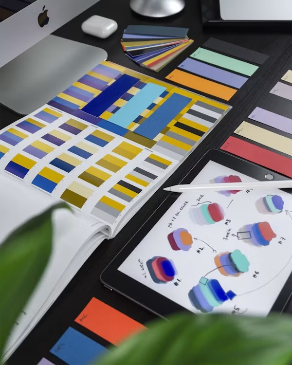
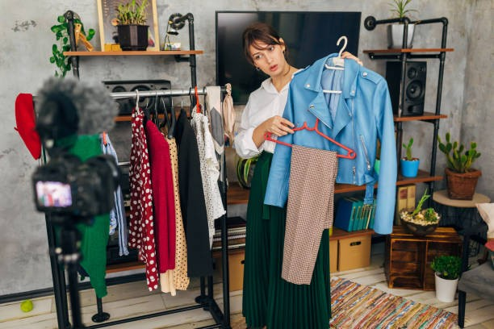
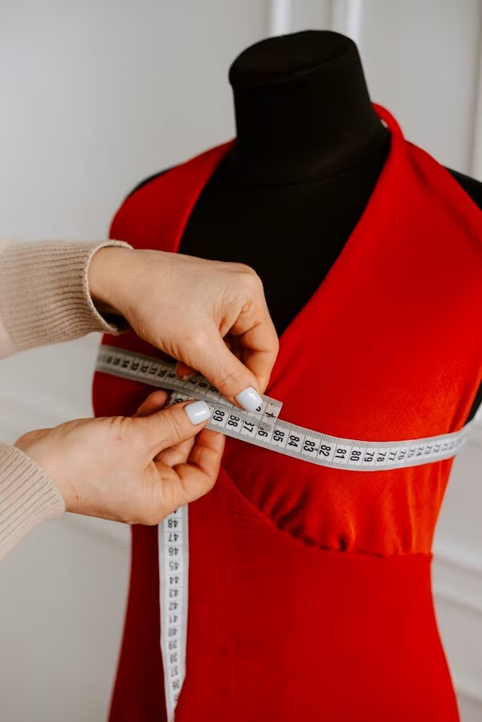
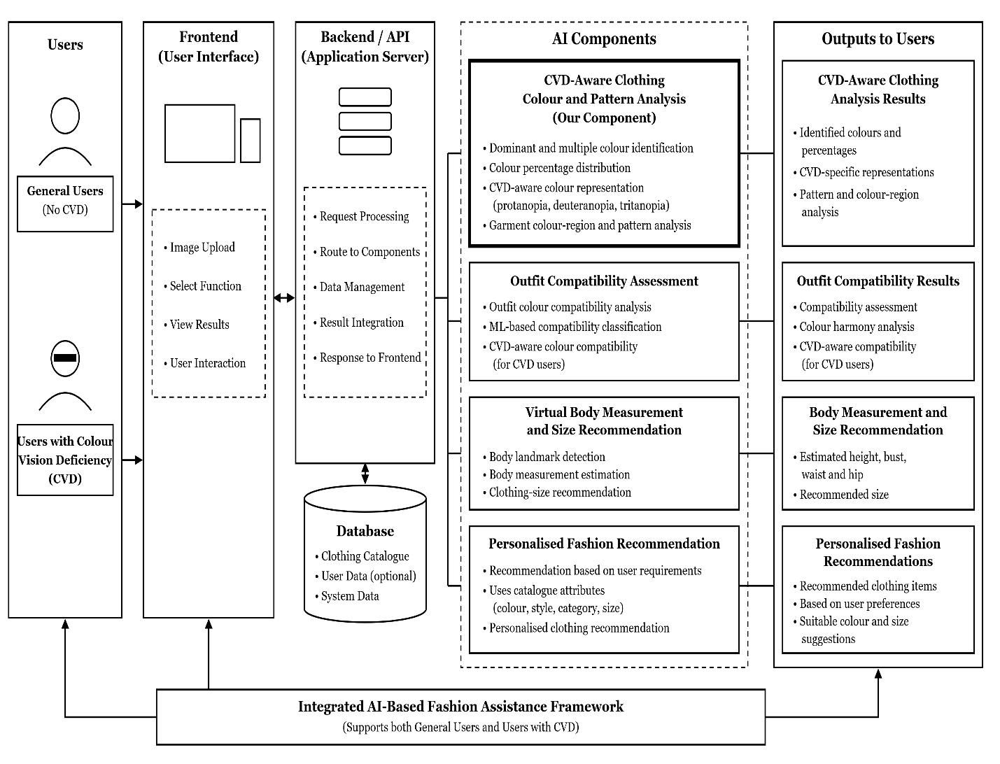
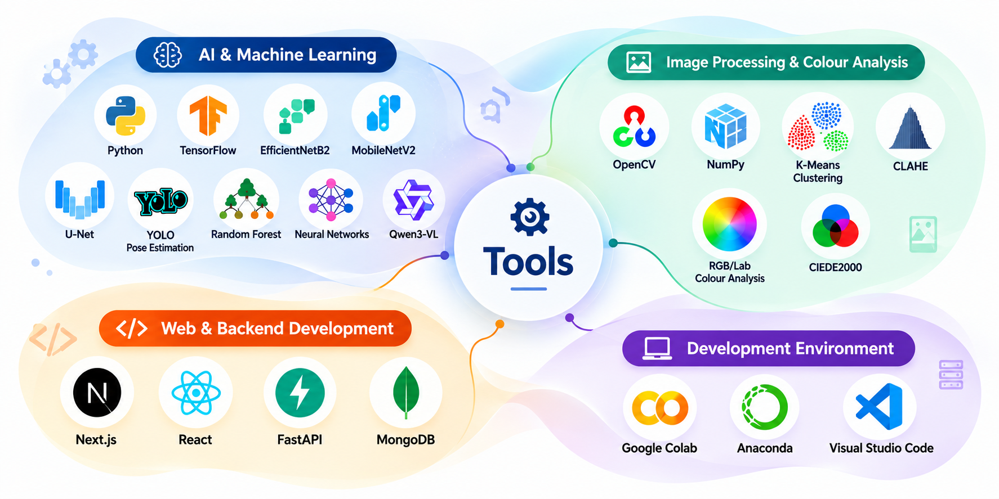
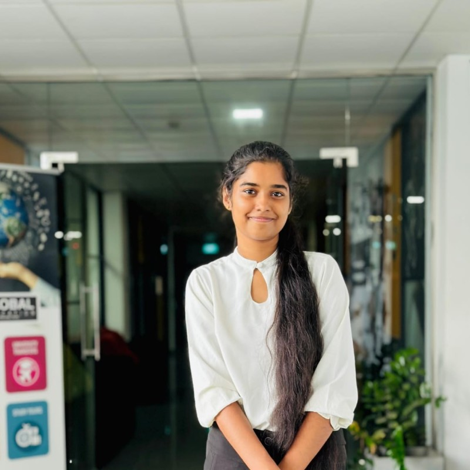

Welcome To STYLE AI
Inclusive AI Fashion Stylist with Measurement and Color Vision Deficiency-Aware Clothing Analysis
Read MoreInclusive AI Fashion Stylist with Measurement and Color Vision Deficiency-Aware Clothing Analysis
Read MoreOur system combines AI, computer vision, and fashion recommendation technologies to support users throughout the clothing-selection process. It helps users understand garment colors and patterns, evaluate outfit compatibility, estimate clothing sizes, and receive personalized fashion recommendations.
Identifies dominant and multiple garment colors with their percentage distributions, recognizes clothing patterns, simulates how garments appear under Protanopia, Deuteranopia, and Tritanopia, and provides CVD-aware guidance for easier clothing identification.
Analyses the colors of top and bottom garments and classifies their compatibility as Good, Moderate, or Poor, while also identifying colors that may be difficult for CVD users to distinguish.
Captures a full-body image, detects key body landmarks, estimates body measurements, predicts a suitable clothing size, and provides personalized body appearance and wellness guidance.
Analyses user requirements such as colour, style, occasion, material, pattern, sleeve type, neckline, and price to recommend suitable items from the available clothing catalogue.
Learn more about our project
Inclusive AI Fashion Stylist is an intelligent fashion assistance system designed to make clothing selection more accessible, personalized, and inclusive.
Powered by Artificial Intelligence and Computer Vision, the system helps users understand clothing beyond appearance. It provides image-based body measurements, size guidance, personalized clothing recommendations, multi-colour identification, and pattern analysis.
A key focus of the system is supporting individuals with Color Vision Deficiency (CVD). It analyses garment colours and patterns and provides CVD-aware visualizations for protanopia, deuteranopia, and tritanopia, helping users better understand how clothing colours and patterns may be perceived.
Our goal is to create a smarter and more inclusive digital fashion experience where technology helps every user make more informed and confident clothing choices.
Read our research domain details here

Recent research has applied Artificial Intelligence and computer vision to clothing colour recognition, CVD simulation, pattern analysis, body measurement, size prediction, outfit matching, and fashion recommendation. Existing colour-analysis methods can identify garment colours, while CVD simulation techniques represent how colours may appear under different types of Color Vision Deficiency. Research has also explored image-based body measurement and AI-driven fashion recommendations.
However, these technologies are mostly developed as separate solutions. There is limited research combining CVD-aware colour and pattern analysis, outfit compatibility, virtual size recommendation, and personalized fashion recommendations within a single inclusive fashion platform.
There is a significant research gap in providing an integrated and inclusive AI-based fashion solution for both general and Color Vision Deficiency (CVD) users. Current research addresses clothing colour analysis, CVD support, outfit matching, body measurement, and fashion recommendation mostly as separate research areas.
There is a need for fashion-specific analysis that combines multiple-colour identification, colour percentages, CVD simulation, pattern analysis, and CVD-aware clothing guidance.
There is a need to combine multi-colour outfit compatibility assessment with CVD-specific colour distinguishability, helping users understand both whether garments match and whether their colors can be clearly distinguished.
There is a need for an accessible image-based approach that can estimate body measurements and recommend clothing sizes without relying on specialized 3D scanning equipment.
There is a need to connect individual clothing requirements and predicted size with available catalogue items, while also providing personalized styling guidance.
Digital clothing selection requires users to understand garment colours and patterns, determine whether clothing items are compatible, select an appropriate clothing size, and find products that match their personal requirements.
These tasks can be particularly challenging for individuals with Color Vision Deficiency (CVD) because visually similar colours may be difficult to distinguish, especially in multi-coloured and patterned garments. Existing digital fashion solutions also tend to address colour analysis, clothing matching, body measurement, size prediction, and fashion recommendation as separate problems.
The main research problem is therefore the lack of an integrated and inclusive AI-based fashion solution that supports both CVD and non-CVD users throughout the clothing-selection process.
This research addresses the problem by combining accessible garment analysis with outfit compatibility assessment, virtual size recommendation, and personalized fashion recommendations within a unified platform.

The main objective of this research is to develop an AI-based inclusive fashion assistance system that supports accessible and personalized clothing selection through CVD-aware garment analysis, outfit compatibility assessment, virtual size recommendation, and personalized fashion guidance.
To identify dominant and multiple garment colours with their percentage distributions, recognize garment patterns, simulate clothing appearance under Protanopia, Deuteranopia, and Tritanopia, and provide CVD-aware guidance for easier clothing identification.
To analyse the colour relationships between top and bottom garments, classify their compatibility, and identify potential colour-confusion issues that may affect users with different types of CVD.
To analyse a captured full-body image, detect body landmarks, estimate relevant body measurements, predict a suitable clothing size, and provide personalized body appearance and wellness guidance.
To interpret clothing requirements and preferences, recommend suitable items from the available clothing catalogue based on user requirements and predicted size, and provide personalized styling guidance for selected outfits.

The proposed system follows a structured AI-based methodology consisting of four main components.
The uploaded clothing image is first preprocessed using techniques including background removal and image enhancement. K-Means clustering analyses multi-coloured garments and calculates the percentage distribution of individual colours. A Conditional U-Net with MobileNetV2 generates garment representations for Protanopia, Deuteranopia, and Tritanopia. Pattern regions are also analysed using pixel-level segmentation and enhancement techniques to improve the visibility of garment patterns and details for CVD users.
The system extracts the main colours and their percentages from top and bottom garments. CIEDE2000 colour difference analysis is used together with machine-learning models to classify outfit compatibility as Good, Moderate, or Poor. The system additionally checks garment colours for known CVD colour-confusion relationships.
A captured full-body image is analysed using pose estimation to identify important body landmarks. These landmarks are used to estimate body measurements and predict an appropriate clothing-size category. The predicted measurements and size are then used to generate supportive body appearance and wellness guidance.
The recommendation component interprets the user's clothing requirements, including attributes such as colour, article type, style, material, pattern, sleeve type, neckline, occasion, and price. Available catalogue items are filtered and ranked according to the extracted requirements and suitable size. After an outfit is selected, the system provides personalized styling guidance covering complementary colours, footwear, accessories, layering, and related items.


View Our Presentations Here
Lecturer
narmada.g@sliit.lk
Department of Computer Systems Engineering | Faculty of Computing
Lecturer
buddhima.a@sliit.lk
Department of Computer Systems Engineering | Faculty of Computing
IT22259820
bimbaalahakoon@gmail.com
Faculty of Computing | Information Systems Engineering

IT22260192
senaliashinsani25@gmail.com
Faculty of Computing | Information Systems Engineering
IT22242372
amandisiriwardana@gmail.com
Faculty of Computing | Information Systems Engineering
IT22098696
lakmidissanayake1820@gmail.com
Faculty of Computing | Information Systems Engineering
SLIIT Malabe Campus, New Kandy Rd, Malabe, SriLanka
inclusiveaistylist@gmail.com
+94 77 5338 747